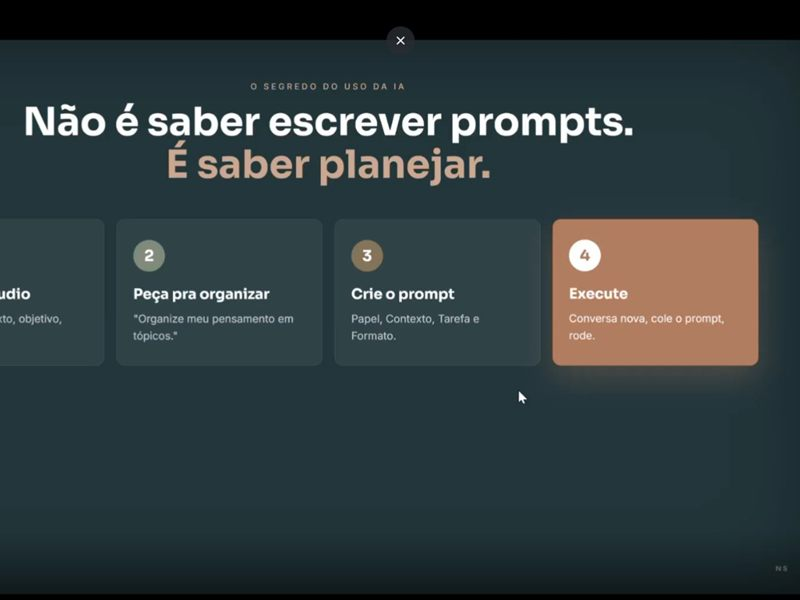

Formação de Claude para empresas é um curso de IA in-company desenhado sobre a operação real do cliente — não um treinamento de inteligência artificial (IA) genérico. Eu não chego com aula pronta: mergulho na empresa, entendo os processos e monto os encontros em cima do trabalho que o time faz de verdade, usando o Claude com os cases da própria casa.

Deixa eu te contar como foi. Antes da primeira aula, eu mergulho na operação. Foi assim nessa formação que estruturei e facilitei para 40 líderes da Oneglobal Broking, ao longo de três encontros semanais. Comecei com uma pesquisa pra entender a turma — quem eram, o que já usavam, onde travavam. A partir dali, montei o arco das três aulas dentro do contexto deles: uma corretora de seguros multinacional, com os exemplos da própria casa.
Os cases a gente construiu juntos
Essa é a parte que muda tudo. Os cases práticos não vieram de um banco de exemplos de internet — a gente construiu juntos. Me reuni com as áreas, entendi onde existiam processos com oportunidades pra IA e transformei cada um numa demonstração ao vivo. As áreas que entraram foram:
- Financeiro — processos que consumiam tempo e viravam gargalo.
- Garantia — tarefas repetitivas que dava pra estruturar com o Claude.
- Comercial — do dado bruto a um entregável pronto pro cliente.
Em cada demonstração eu fazia o caminho completo na frente da turma: do dado bruto ao entregável pronto — e automatizando todo o processo de forma simples com o Claude. Não é mágica, não é código difícil. É pegar uma dor real da área e mostrar, ali, ela virando resultado.
Quando o líder vê a IA resolvendo o processo dele, e não um exemplo qualquer, o aprendizado gruda. Ele não sai da aula pensando "que legal essa ferramenta". Sai pensando "segunda de manhã eu faço isso no meu setor". É a diferença entre um curso que inspira e um que muda a rotina.
O retorno que mais me marcou
Muitos retornos vieram de forma espontânea ao longo dos encontros, e um deles foi muito bacana. A Fabi, da equipe, contou que fez em 5 minutos uma proposta comercial que antes levava 2 horas.
Uma proposta comercial que levava 2 horas passou a sair em 5 minutos. Retorno espontâneo, no meio da formação.
Esse tipo de retorno é o que eu procuro. Não é um número que eu inventei num slide — é a própria pessoa da equipe percebendo, no trabalho dela, que o jeito de fazer mudou. Quando isso acontece com um líder, ele leva pra área inteira.
Uma formação de Claude desenhada sobre a sua operação
Eu mergulho na sua empresa antes da primeira aula, monto o arco dos encontros com os cases das suas áreas e faço a demonstração ao vivo, do dado bruto ao entregável pronto. O time sai sabendo usar o Claude no trabalho de verdade.
Como eu monto uma formação de Claude in-company
Se você chegou até aqui querendo entender o método, é mais ou menos assim que ele funciona, do começo ao fim:
- Pesquisa com a turma. Antes de qualquer aula, eu descubro quem são as pessoas, o que já usam e onde travam.
- Mergulho na operação. Me reúno com as áreas pra achar os processos com oportunidade real pra IA.
- Arco das aulas no contexto da empresa. Monto os encontros com os exemplos da própria casa, não com casos genéricos.
- Cases construídos juntos. Cada processo vira demonstração ao vivo, do dado bruto ao entregável pronto.
- Autonomia no fim. O time sai sabendo automatizar o próprio trabalho com o Claude, de forma simples.
40 líderes de uma corretora de seguros multinacional, três encontros semanais, cases construídos com Financeiro, Garantia e Comercial. Retorno espontâneo da equipe: uma proposta comercial que levava 2 horas caiu pra 5 minutos. Formação desenhada sobre a operação deles, do dado bruto ao entregável pronto.
Se você quer entender o que o Claude consegue fazer no dia a dia antes de levar uma formação dessas pro seu time, dá uma olhada no Guia do Claude — é a base de quase tudo que a gente constrói nesses encontros. E pra ver os outros formatos de treinamento, tá tudo em Treinamentos Corporativos.
Um agradecimento à Oneglobal, em especial ao Michel Wajs, pela confiança e pela parceria nessa formação. Case assim só existe quando a empresa abre a operação e topa construir junto.